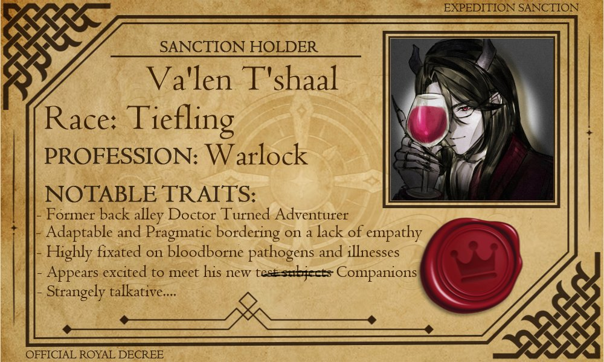

Va’len T’Shaal
- Race / Species
- Tiefling
- Class
- Warlock
- Background
- Noble, turned Failed Doctor
- Alignment
- Lawful Evil

Va'len T'shaal: Doctor, Warlock, and Heartless Pragmatist. Running from his prior crimes in the homeland, Va'len hopes that his particular style of reseach might become the foundation of this new world.
After all, somone needs to think of "The Greater Good"
[ source ] ( Art by @azuchicastle21 )
📜 YOUR CHARACTER AT A GLANCE
Character Concept
Failed doctor (haematologist) turned blood mage who after his experiments were discovered back in the Crownlands, volunteered himself for an expedition into the unknown. [note 1]
Three Words That Describe Them:
- Ambitious
- Pragmatic
- Cutthroat
What do they look like?
Ashen-skinned Tiefling. Pale, sickly almost in appearance. Still dresses like a nobleman. Waistcoat, long dinner jacket, silver-clawed gauntlet, medical reference books tucked into his pack. Covered in small packs and little leather pouches. Dinner coat full of pockets.
Hair: Long hair down his back. Black in color. Partial braid. Also still carries around medical equipment, (((syringes))).
Shorter horns.
Thinks he can heal. Knows he can harm.
What immediately stands out about them?
His eyes (purplish-red) are always looking as if he is assessing everything he sees. (Something just slightly fucked up about his gaze, no light behind the eyes.)
❤️ PERSONALITY
Personality Traits
Upon first meeting, turns on the charm and becomes the most personable being he can be. The charm is a deliberate attempt to try and disarm those he meets and ingratiate himself into whatever situation he finds.
There’s something sliiiiiightly off with him. The smile never reaches his eyes
Strengths
Strong pragmatic mind. Genuinely good at reading other and social events. Good problem solving. Adaptable
Flaws
Lack of empathy. Lack of morals.
Quirks & Habits
Failure. Wasting his life, if the goal of healing all is impossible, then why do I exist?
Likes
Blood, science, long walks on the beach, a good bottle of wine, the cold, meeting new people. Quiet days in his lab, helping others (society as a whole (the greater good (in the long term)))
Dislikes
Waste, ignorance, closed mindedness, being judged. Time being wasted. Children.
🗡️ ADVENTURING
Class & Abilities
Primary Role: Damage Dealer & Spellcaster
Signature Ability
Blood Thorns and Life Drain, and a witty last word
⚔️ WEAPONS & EQUIPMENT
Primary Weapon: Spells / Sword / Dagger
Secondary Weapon: n/a (not that kind of guy)
Armour / Clothing: Very Virgil Coat, is not afraid of wearing armour.
Most Valuable Possession:
Anatomy book left over from his studies.
Signature Ability
RESEARCH NOTES.
✨ MAGIC & SPECIAL ABILITIES
Magical Ability / Power:
Blood Magic.
How did they acquire it?
Research into blood drove him deeper into a cult study. That study led him to an entity that exists and is connected to the blood. That creature is what he has gained his power from. By understanding the blood, by understanding the rules of this being, his power grows.
What does their magic look or feel like?
It’s blood bruh. Warm or hot depending on the spell, especially powerful spell can have the vitae sizzling on impact or chewing through their target like acid.
Does their power have a cost, weakness, or limitation?
Using his own blood exhausts him and may force him to rest. His power is limited by his understanding of the creature that lives within Vitae.
BACKSTORY
🎯 MOTIVATION
What does your character want?
Heal the world and banish sickness. Understand the nature of this realm so that there might be future medical application.
Why do they want it?
It’s my life’s meaning
What would they sacrifice to achieve it?
Lives, men, women, children, ... but never myself…
What would they NEVER sacrifice?
His own life, ever. If I die, nothing matters.
What would make them abandon the adventure?
Hopelessness. There must always be a chance of successful, fighting against impossible odds is not what I signed up for.
🏰 THE ADVENTURING PARTY
What do you think of your fellow adventurers?
Interesting test subjects, unique creatures. It might be delightful to see them in action. Variety is the spice of life. This new land could become a place of science, freedom and a location where those with enterprising minds may work freely without such awful obstruction such as “human rights”.
Primary Role: Damage Dealer & Spellcaster
What would make you trust another party member?
Openness, obedience, knowing their place. Too much intelligence is dangerous on the wrong sort. Moral flexibility. Ambition. Good hygiene. A positive outlook. Loyalty shall be repaid in kind
What would make you betray them?
Research data, their own betrayal, selfishness .
💀 MORALITY & CHOICES
Your character discovers a wounded enemy begging for mercy. What do they do?
Watch.
And when ready, finish quickly and cleanly, ideally via precise head trauma. To keep vital organs intact yk~
You discover a treasure that could make you incredibly wealthy, but taking it will harm innocent people. What do you do?
Take it. The good I use the treasure for will outweigh the suffering of a few insignificants.
What line will your character never cross?
I will never allow emotion to dictate my work and prevent the great deed that I am undertaking.